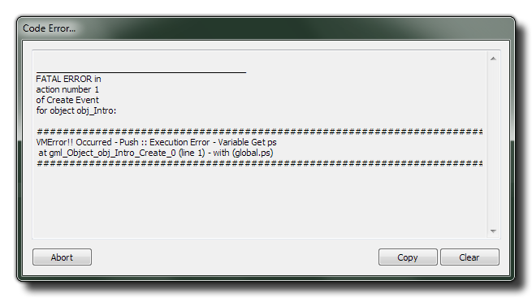

Even after syntax checking in the code editor and then having the compiler check your code, there are still occaisions when something can go wrong. in most cases this will throw a VM (virtual machine)
error which ooks like this:

VM errors are generally more serious than compile errors as it means that there is something seriously wrong with your code that neither the code editor nor the compiler have been able to detect, and as such you
should pay attention to all such errors. When one occurs, you can use the "copy" button on the pop-up to copy the error to the clipboard which you can then paste into a text file (or wherever) for future reference.
The possible errors from the VM runner are as follows:
NOTE : All runner errors will try and point you to the object or script that has caused the crash.
- Conversions
DoConv :: Execution Error
This denotes an error in the conversion of one data-type into another.
- Addition
DoAdd :: Execution Error
Something has gone wrong when using the addition (+) expression.
- Multiplication
DoMul :: Execution Error
Something has gone wrong when using the multiplication (*) expression.
- Subtraction
DoSub :: Execution Error
Something has gone wrong when using the subtraction (-) expression.
DoSub :: Execution Engine - Cannot operate on string type
You are trying to subtract the wrong type of variables (for example subtract a string from a real).
- Division
DoDiv :: Execution Error
Something has gone wrong when using the division (/ or div) expression.
DoDiv :: Execution Engine - Cannot operate on string type
You are trying to divide the wrong type of variables (for example divide a string by a real).
DoDiv :: Divide by zero
You are attempting to divide by 0.
- Remainders
DoMod :: Execution Error
Something has gone wrong when using the modulo (mod) expression.
DoMod :: Execution Engine - Cannot operate on string type
You are trying to use modulo on the wrong type of variables (for example mod a string by a real).
- Bitwise And
DoAnd :: Execution Error
Something has gone wrong when using the bitwise "and" (&) expression.
DoAnd :: Execution Engine - Cannot operate on string type
You are trying to use "and" on the wrong type of variables (for example trying to "and" a string with a real).
- Bitwise Or
DoOr :: Execution Error
Something has gone wrong when using the bitwise "or" (|) expression.
DoOr :: Execution Engine - Cannot operate on string type
You are trying to use "or" on the wrong type of variables (for example trying to "or" a string with a real).
- Bitwise Xor
DoXor :: Execution Error
Something has gone wrong when using the bitwise "xor" (^) expression.
DoXor :: Execution Engine - Cannot operate on string type
You are trying to use "xor" on the wrong type of variables (for example trying to "xor" a string with a real).
- Bitshift Left
DoShl :: Execution Error
Something has gone wrong when bitshifting left (<<) a value.
DoShl :: Execution Engine - Cannot operate on string type
You are trying to left bitshift the wrong type of variables (for example trying to bitshift a string).
- Bitshift Right
DoShr :: Execution Error
Something has gone wrong when bitshifting right (>>) a value.
DoShr :: Execution Engine - Cannot operate on string type
You are trying to right bitshift the wrong type of variables (for example trying to bitshift a string).
- Negative
DoNeg :: Execution Error
You are trying to turn a variable type into a negative when this type does not permit such an operation.
- Not
DoNot :: Execution Error
You are trying to "not" a variable type when this type does not permit such an operation.
- Stack Push
Push :: Execution Error - Variable Index out of range (var)
The variable being accessed is out with the established range for the runner.
Push :: Execution Error - Variable Get (var)
The given variable has not been defined or is unknown.
- Stack Pop
Pop :: Execution Error - Variable Index out of range (var)
The variable being accessed is out with the established range for the runner.
Pop :: Execution Error - Variable Get (var)
The given variable has not been defined or is unknown.
- With
Cannot use global in with statement
You have tried to use a global variable (that does not point to a valid instance id) in a "with" statement.
Cannot use local in with statement
You have tried to use a local, "var" declared variable (that does not point to a valid instance id) in a "with" statement.
- General
DoCall :: Execution Engine type error
This is an undefined error within the Virtual Machine. You should file a bug report should this happen (see: The Help Menu for details on how to do this.
Stack Overflow...
A stack overflow occurs when too much memory is used on the call stack and when your game attempts to use more space than is available on the call stack (that is, when it attempts to access memory beyond the call stack's bounds, which is essentially a buffer overflow), the stack is said to overflow, resulting in a program crash. Restart your computer and GameMaker:Studio and if the error persists please get in touch with support and/or file a bug (as explained above).